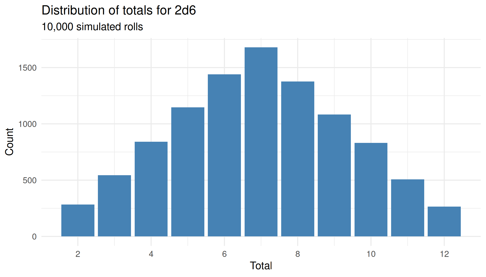
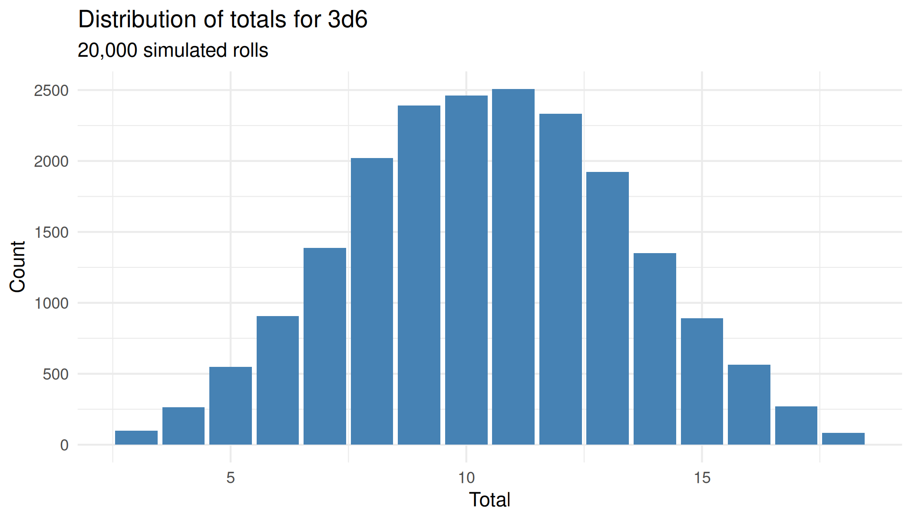
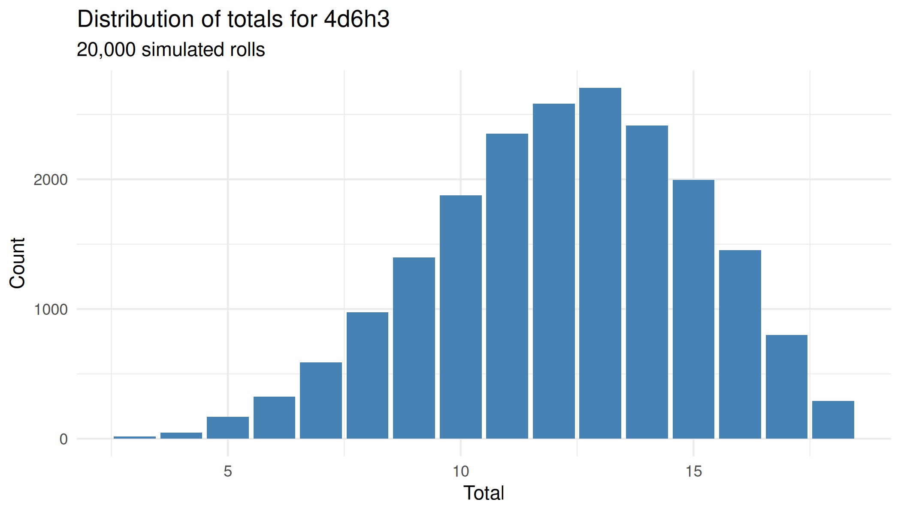
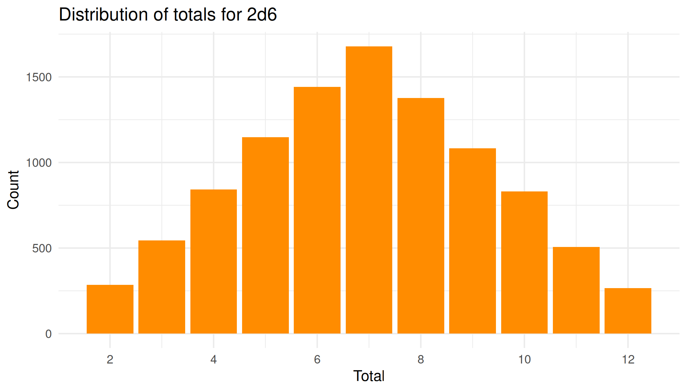
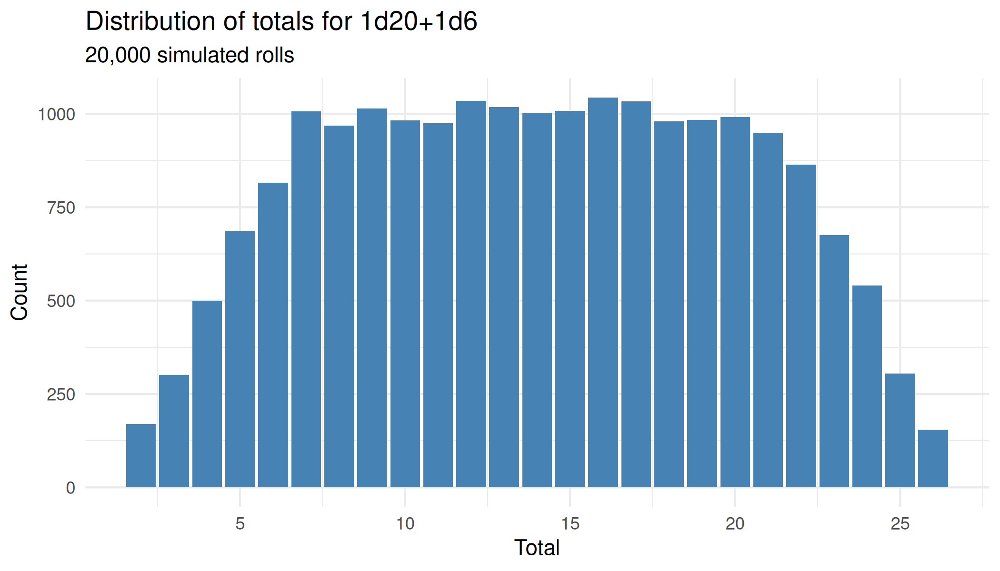

rollr2 results carry rich distributional information, and both result classes have a plot() method that turns a result into a finished, themed ggplot2 chart with a single call. roll_distribution() plots the sampled totals from many rolls, while roll() plots the notation’s exact theoretical outcome distribution with the rolled total highlighted. Because roll_distribution() is sampled, the chunks below fix a seed so those figures are reproducible; plot(roll(...)) reads the exact distribution and needs a seed only to fix which total gets highlighted.
A sampled distribution
roll_distribution() samples many rolls and tallies how often each total comes up. Passing the result to plot() draws a bar chart of those counts across the notation’s total range. Two six-sided dice give the familiar triangular distribution, peaking at 7.
set.seed(42)
d <- roll_distribution("2d6", n = 10000)
plot(d)
A single roll against its distribution
plot() on a roll shows the notation’s exact theoretical outcome distribution and highlights the bar for the total you actually rolled. The subtitle reports the roll’s percentile standing, the same “beats P% of outcomes” reading the compare = TRUE print path uses. The plot always shows the theoretical distribution, whether or not the roll was created with compare = TRUE.
Comparing a flat roll with a keep selector
Keep selectors change a distribution’s shape. A common example is character-ability generation: 4d6h3 (roll four dice, keep the highest three) skews higher than a flat 3d6, even though both range from 3 to 18. Sampling each notation and plotting the results shows the shift.
set.seed(42)
plot(roll_distribution("3d6", n = 20000))
set.seed(42)
plot(roll_distribution("4d6h3", n = 20000))
Extending a returned plot
Each plot() method returns a standard ggplot object, so you can capture it and keep composing with +, for example to recolour the bars or drop the subtitle.
set.seed(42)
p <- plot(roll_distribution("2d6", n = 10000))
p +
geom_col(fill = "darkorange") +
labs(subtitle = NULL)
Multi-term notation
The same plot() method works for a notation that sums several terms. Adding 1d20+1d6 combines a flat twenty-sided die with a six-sided die, spreading the total over a wider range than either die alone.
set.seed(42)
plot(roll_distribution("1d20+1d6", n = 20000))